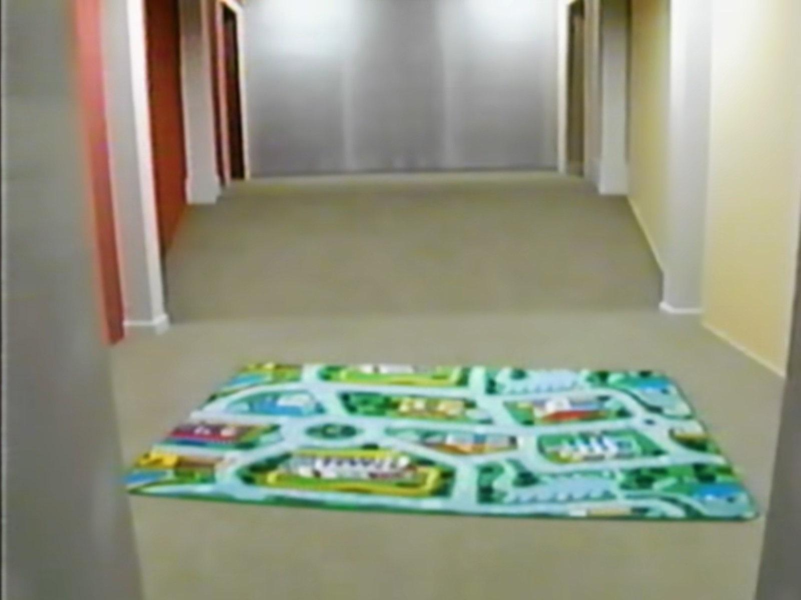
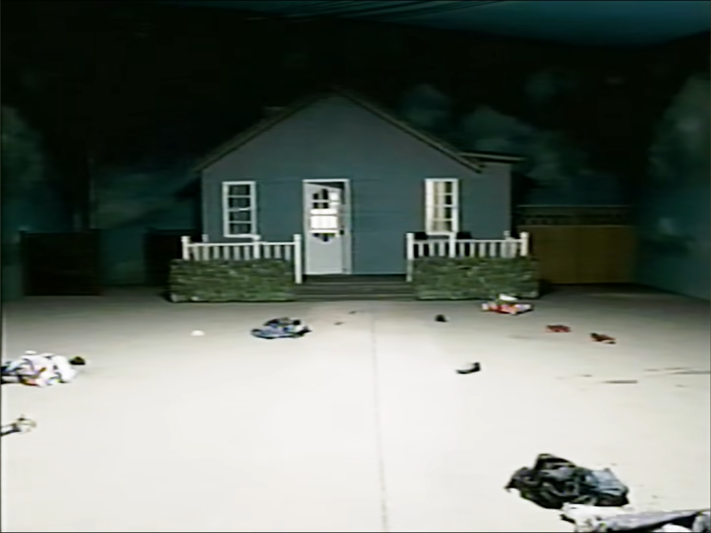
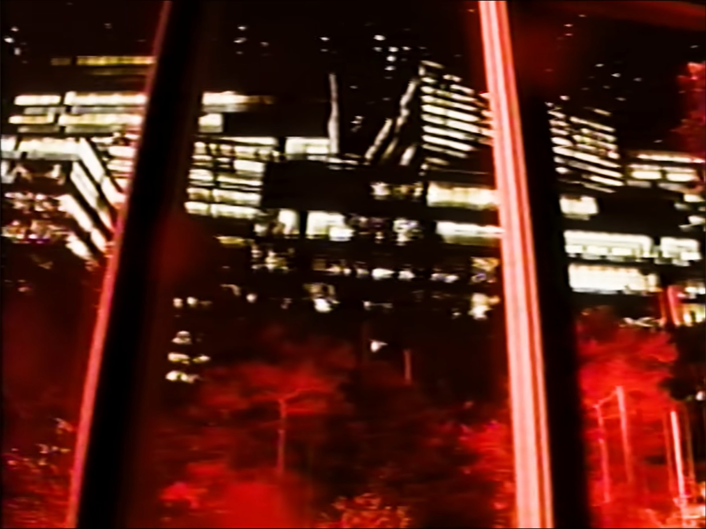
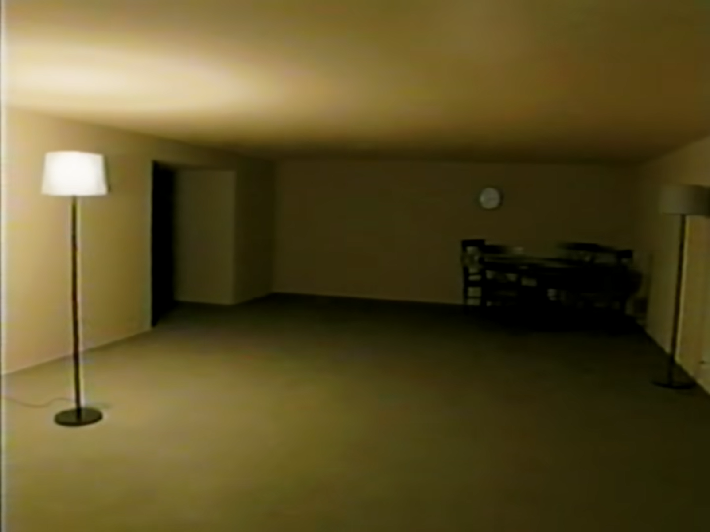
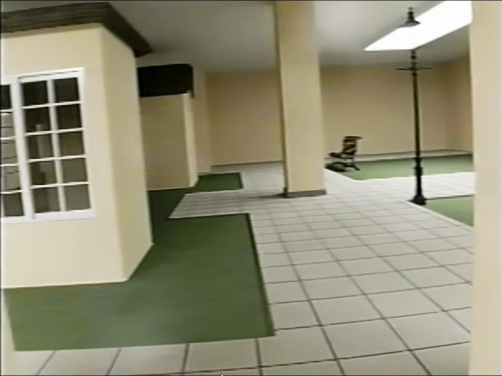
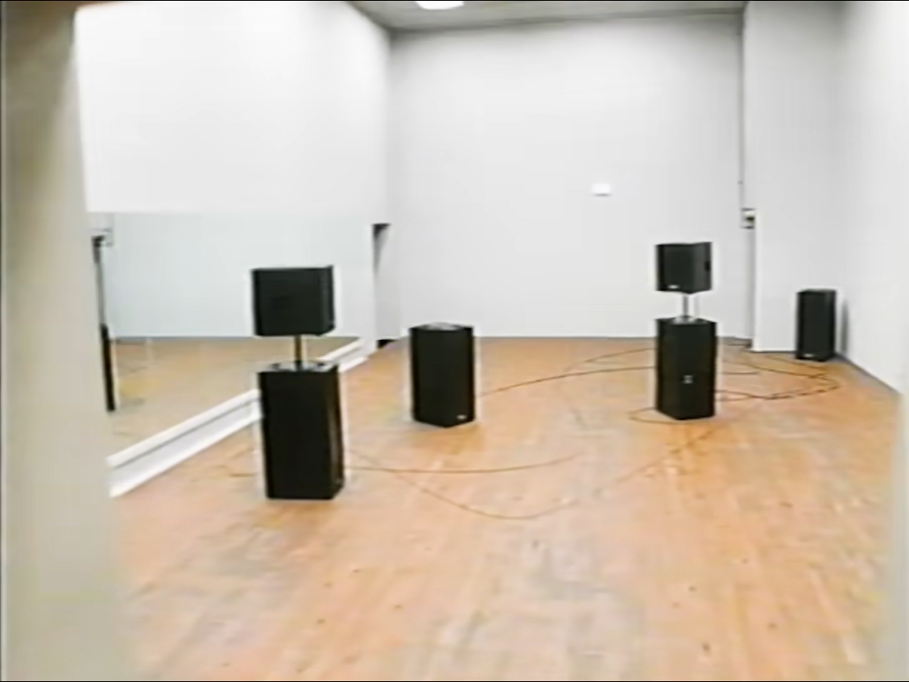
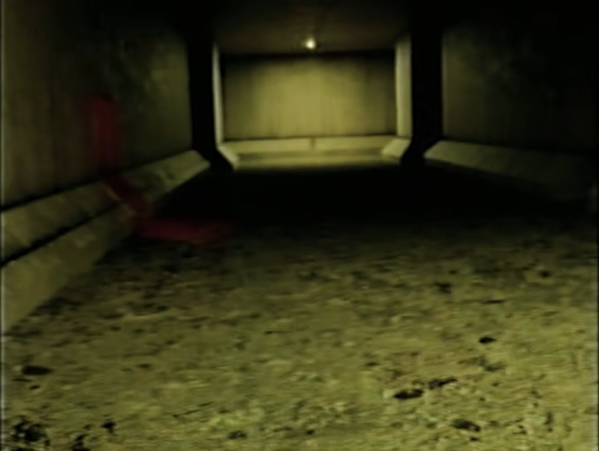
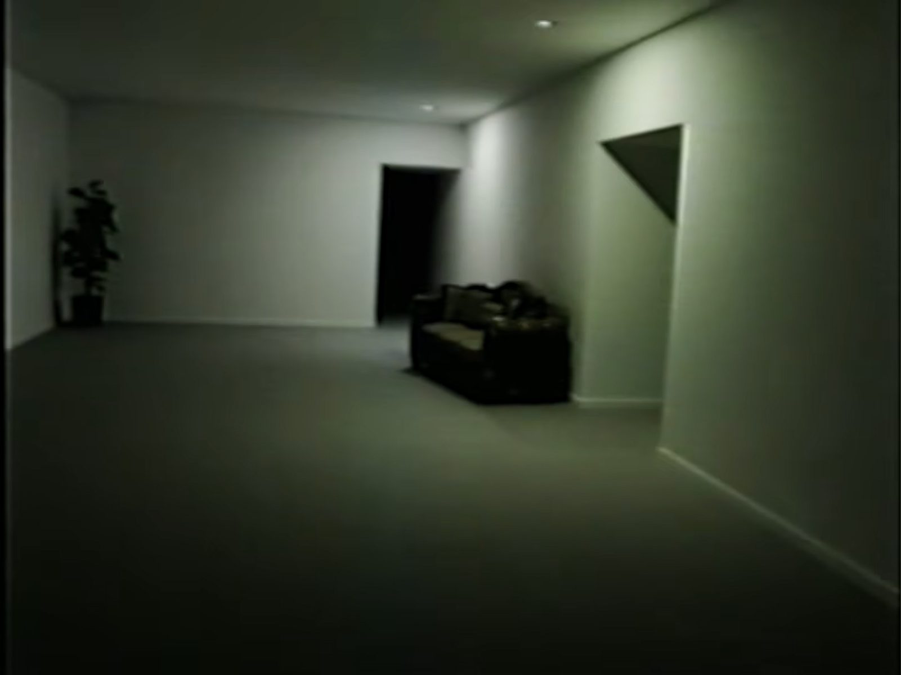
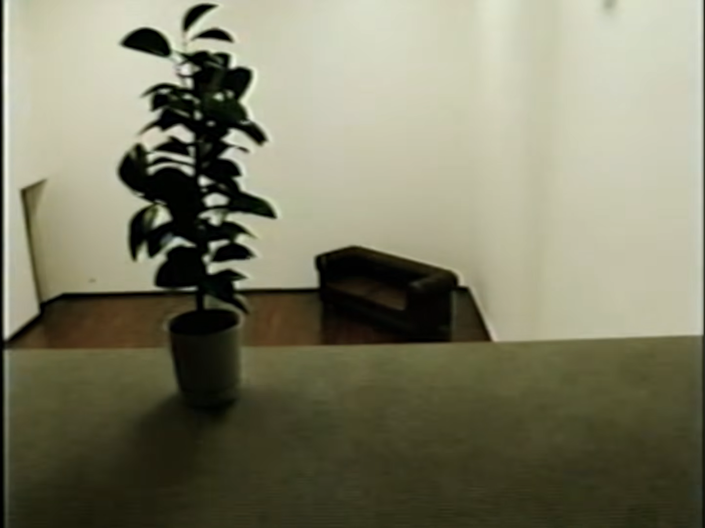

RECORD / 01
Everything Must Go
Archived field footage connected to ongoing A-Sync survey work.
VIEW RECORDINGPROJECT KV31
Field recordings, research footage and archived documentation collected by A-Sync.
RECORD / 01
Archived field footage connected to ongoing A-Sync survey work.
VIEW RECORDING
RECORD / 02
Field survey footage documenting an unusual section inside the Complex.
VIEW RECORDING
RECORD / 03
Technical survey of lighting conditions and materials found in the Complex.
VIEW RECORDING| Record | Title | Type | Status |
|---|---|---|---|
| KV31-R01 | Everything Must Go | Field Recording | AVAILABLE |
| KV31-R02 | Static Dead End | Survey Recording | AVAILABLE |
| KV31-R03 | Lighting and Tile Survey | Technical Survey | AVAILABLE |








